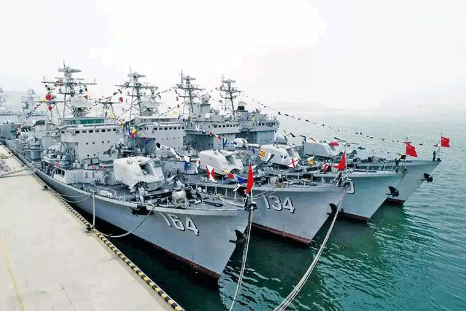
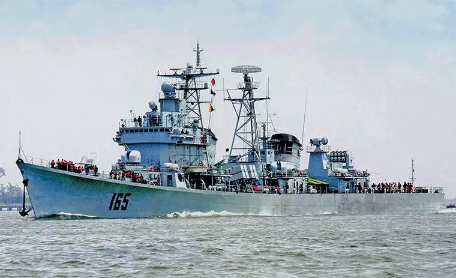
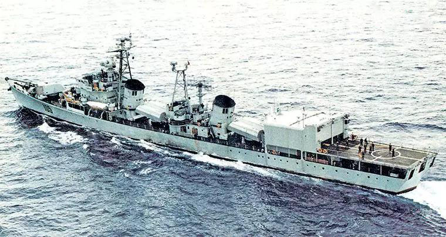

返回上一层
再见，051!国产第一代导弹驱逐舰回顾
- 近期，北部战区某驱逐舰支队官兵在旅顺某军港整齐列队，为4艘国产051型导弹驱逐舰举行了退役仪式。这4艘驱逐舰分别为开封舰、大连舰、遵义舰和桂林舰，服役均超过30年，航迹遍布祖国的万里海疆。051型驱逐舰在役期间，捍卫了祖国的领海安全，在人民海军水面战斗舰艇的发展史上发挥了重要的承上启下作用，见证着人民海军的发展航迹。 更新换代，满足需求 上世纪50年代初，人民海军的水面战斗舰艇都是一些小吨位的老旧舰艇和起义舰艇。为培养官兵，积累大型水面战斗舰艇的使用经验，保卫渤海湾海上安全，党和政府决定从极为紧张的国防经费中拨出专款从苏联订购4艘驱逐舰，并最终以每艘相当于当时17吨黄金的高价购得4艘即将退役的苏制07型驱逐舰。这4艘驱逐舰被称为“四大金刚”，后期还加装了反舰导弹，长期是人民海军的主要水面战斗舰艇。然而，07型为适应苏联寒带区域而设计，舰内空间狭小、通风不良，居住性差，无法满足远洋任务需求，而且当时洲际弹道导弹全程试验飞行任务，也需要拥有一批能够为航天远洋测量船编队提供海上护卫的国产导弹驱逐舰，因此，第一代国产导弹驱逐舰的研制建造提上了日程。 上世纪60年代中期，第一代国产导弹驱逐舰也就是051型导弹驱逐舰正式立项。该型导弹驱逐舰是在我国结合当时国内已经完善和成熟的设计能力及工业建造技术，自行设计建造的导弹驱逐舰，也是亚洲国家在第二次世界大战后首型自研自造的导弹驱逐舰。 该型导弹驱逐舰由大连、上海、广州三地的造船厂承担建造，在上世纪70年代至90年代初建造了17艘，成为很长一段时期内，人民海军的主力水面战斗舰艇。这17艘051型驱逐舰，根据不同的需求、技术水平等，还分为多个改型。 由于洲际弹道导弹全程试验飞行任务时间紧迫，而海军又对051型需求数量较大，继首舰济南舰于1968年开工建造后，其他几艘051型舰也于1970年相继开工建造。限于我国当时的工业科技水平，051型首批次各舰建造过程中出现了一些问题，导致部分雷达、电子设备未装备上舰，配套的反舰导弹当时也处于试射改进过程中。
- 
- 后续改进，不断完善 051D型（D代表定型）是051型驱逐舰正式定型并开始批量建造的第二批次舰。上世纪70年代中期以后，自051D型首舰西宁舰起，针对051基本型开展了相关改进工作。最主要的改进是以高射速的双联装37毫米舰炮代替低射速的双联装57毫米舰炮。除舰炮外，051D型的改进还有40多项，包括雷达、反潜、电子、通信、卫星导航和海上补给等系统，配套的反舰导弹飞行高度更低，射程更远。051D型中最晚建成的桂林舰在建造中还加装空调设施，改善了舰员生活条件。 为配合1980年进行的洲际导弹飞行试验远洋测量任务，对测量船队和护航编队实施统一指挥，海军决定研制051Z型指挥舰（Z代表指挥），指挥舰主要是增强编队通信和指挥能力，还要解决油水补给设备改装问题。051Z型合肥舰在已开工的D型基础上改装为指挥舰，交付东海舰队后，参加了为远洋测量船队护航的任务，并担任编队指挥舰。 除针对不同的需求进行改进外，对051型驱逐舰的一些技术升级，也为后来我国新型水面战斗舰艇应用新装备、新技术积累了经验。例如，开封舰在上世纪80年代中期被选作测试新装备的平台，在大连造船厂进行的改装中，在舰尾原双联装37毫米舰炮处加装了一套防空导弹系统以进行试验。这使得该舰拥有了实用的舰空导弹，防空手段也摆脱了只依赖于双37毫米舰炮的情况。在我国之后对部分051型驱逐舰的改进中，也参考了开封舰的改进成果。 1987年，051型舰首舰济南舰，拆除了后甲板1座双联装130毫米舰炮，两座双联装37毫米舰炮和两座双联装25毫米舰炮，在主甲板之上加装一层甲板，其上安装一座可容纳两架直-9反潜直升机的机库，以及配套的直升机起降平台。这一改进，不仅大大加强了该舰的反潜能力，改变了以往只能依靠深水炸弹和火箭深弹进行反潜的限制，还为人民海军发展舰载直升机部队、航空反潜等积累了经验，培养了人才。 上世纪80年代初期，我国曾计划与英国合作，将英国42型驱逐舰的技术应用于051型驱逐舰的改进中，改进重点在提高舰队和单舰的防空能力，该方案被称为051S型。但由于42型驱逐舰在1982年的马岛战争中表现糟糕，被阿根廷军队击沉两艘，重伤1艘，加之所需费用超出预算等其他原因，该计划最终被取消。 051S型取消后，我国决定依靠自己的力量对051型驱逐舰进行改进，即051G型，重点改进该舰的自动化系统和雷达、无线电设备的电磁兼容性，改善近程防空能力，提高反舰能力，总体作战效能比051D型有大幅度提升。051G型的最大特点，就是以全封闭炮塔的新型双联装37毫米自动舰炮，取代原有敞开式炮塔的双联装37毫米舰炮，提高了近程防空能力。
- 
- 瑕不掩瑜，承上启下 客观来说，由于051型的设计参考对象是苏联的56型驱逐舰，所以该级舰现代化程度不高，缺乏有效的防空、反潜火力。051型驱逐舰的防空理念依旧停留在二战阶段，同时也是二战后全世界下水的驱逐舰中，安装火炮最多的一型驱逐舰。该舰的结构设计落后，整个舰体防水隔舱少，机舱之间也缺乏足够防护，抗沉和抗损性不佳。同时，该级舰没有完善的空调设备与核生化三防系统，舰上生活条件非常艰苦。 但051型驱逐舰是人民海军发展史上，有着重要意义的一型水面战斗舰艇。该级舰结束了人民海军使用国外废旧落后舰艇的局面，为我国研制、建造、改进、使用大型水面战斗舰艇积累了经验，锻炼了队伍，证明中国已经有实力研制建造大型水面战斗舰艇，起到了承上启下的作用。在役期间，051型驱逐舰不仅完成了为航天远洋测量编队护航等重大军事任务，也有效捍卫了我国的海疆安全。在新型舰艇不断装备部队的情况下，051型驱逐舰将陆续退出现役，但它们在人民海军发展史上留下的印记是不可磨灭的。
- 